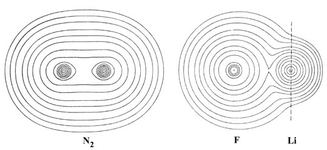

Fig. 7-1. Contour maps of the molecular charge
distributions of N2 and LiF at their equilibrium internuclear
separations. The space to the right of the dashed line through the Li nucleus
denotes the region of nonbonded charge density. The values of the contours
increase from the outermost one to the innermost one. The specific values
of the contours appearing in this and the following contour maps can be
obtained by referring to the Table
of Contour Values.